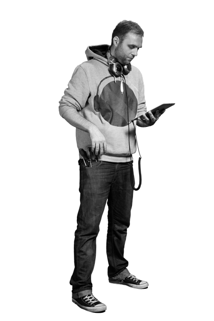

<?php include "inc/_header.php"; ?>

	<section id="team">
		<div class="inner">
			<h1>Meet 'n' Greet</h1>
			<div class="line"></div>
			<menu>
				<a id="btn-philipp" title="philipp" class="roll">
					<span data-title="meet philipp">
						<h1>PHILIPP</h1>
						<h2 class="team-title">Vision Development</h2>
					</span>
				</a>
				<a id="btn-manuel" title="manuel" class="roll">
					<span data-title="meet manuel">
						<h1>MANUEL</h1>
						<h2>Technical Affairs</h2>
					</span>
				</a>
				<a id="btn-igor" title="igor" class="roll">
					<span data-title="meet igor">
						<h1>IGOR</h1>
						<h2>Operations &amp; Sales</h2>
					</span>
				</a>
			</menu>
			<div id="toggle-philipp">
				<article id="team-philipp">
					
					<h1>Philipp</h1>
					<h2>Vision Development</h2>
					<p>
						Seeing is believing, but understanding what you see is certainly of a higher order. ubiiqu's vision developer Philipp Boué brings his multilingual talents to the forefront, speaking not only German, English and some Spanish, but also fluent in the programming languages that allow him to articulate projects with 20/20 vision. His hybrid approach splices together technical savvy with creative consulting, resulting in services that go far beyond that which meets the eye.
						With a Masters in International Business Administration—and certainly the emphasis is on international—Philipp's had stints between London, Munich, Melbourne and Düsseldorf performing an array of consultancy and project management positions for clients including Deutsche Bahn, ZEIT Verlag, Ralph Lauren or Vodafone. When he's not forging peerless visual profiles, you might find him DJing drum and bass, trying his hand at music production or rooting tirelessly for Borussia Dortmund with colleague and fellow fan Manuel.
					</p>
				</article>
				
				<a href="mailto:philipp.boue@ubiiqu.com" class="mail-btn"> Send an email <br /> to Philipp</a>
			</div>
			<div id="toggle-manuel" class="hidden">
				<article id="team-manuel">
					
					<h1>Manuel</h1>
					<h2>Technical Affairs</h2>
					<p>
						The talented Mr. Bieh began his engagement with the internet at the ripe age of 14 when he set up his first commercial website. He has since laid the technical foundations for a wide variety of web pages, software applications and mobile services during his time. With demonstrated programming skills in HTML5, PHP, SQL, CSS3 and an especially strong sense of JavaScript, Manuel takes the nitty gritty syntax of digital coding and transforms it into clean, elegant code. Having serviced a variety of clients while working as a technical officer and software developer, he was even selected in 2008 to pen the first book in Germany about mobile web design.
						As ubiiqu's head of technical affairs, Manuel not only programs with proficiency, but he seeks to connect all that he codes into an “internet of things". What’s that? Well, mobile applications may be the first step, but soon the most mundane of objects will be linked together. This might be the world of tomorrow - he's got it going today.
					</p>
				</article>
				
				<a href="mailto:manuel.bieh@ubiiqu.com" class="mail-btn"> Send an email <br /> to Manuel</a>
			</div>
			<div id="toggle-igor" class="hidden">
				<article id="team-igor">
					
					<h1>Igor</h1>
					<h2>Operations</h2>
					<p>
						Certainly one of the few people who can boast a discography just as impressive as their CV, Igor splits his time between New York and Berlin promoting a wide range of projects from celebrity marketing tools, digital media applications and the occasional album or two. He signed his first major record deal in 1997 and went on to produce for Sony, Universal and Bertelsmann, which gave him the impetus to fuse his love of music with the emerging possibilities of the mobile market. Since then he's peppered MGM, Fox Mobile and White Diamonds with business development strategies that have helped blossom the profiles of their products and services.
						As head of operations for ubiiqu, Igor injects his background in art into a management style that's equal parts competent and creative. Whether researching new mobile revenue models, establishing streaming services or simply hanging out with fellow musicians and “open-minded business freaks" like himself, he's to be found on the fast track creating the next applications of the brave new digital world.
					</p>
				</article>
				
				<a href="mailto:igor.koelblinger@ubiiqu.com" class="mail-btn"> Send an email <br /> to Igor</a>
			</div>
		</div>
	</section>

<?php include "inc/_footer.php"; ?>